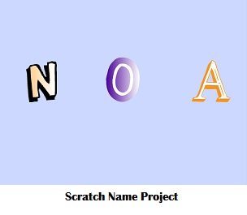
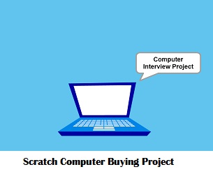
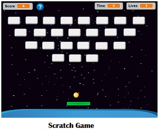

Name Assignment

Description:
Use scratch to design and create a program that displays my name. The requirements were to add a sprite for each letter in my name and give each letter 3 unique behaviors.The “forever” block was required. The program needed to run when the green flag was clicked and and for extra credit I added a function to reset the scene to the beginning each time the green flag was clicked.
Concepts Learned:
- Using event blocks: when green flack clicked, when space bar pressed
- Using movement blocks: In order to make the sprite go back to its original location when the green flag was clicked, I used the x and y values. I also used the “turn to x degrees” movement block to make my sprites rotate.
- Using looks blocks: I used the “change size to” block to make a sprite enlarge and shrink continuously when the spacebar was pressed. I also used the “change color effect” to make a sprite change costume.
- Sprites: I used library of sprites to find letters in my name and adjusted the costumes.
- Using Control Blocks: I used forever and repeat loops to make a sprite’s behavior continuous.
- Using conditional statements: I used if statements to start a sprite’s behavior when the spacebar was pressed. I also used if statements to reset my name when the green flag was clicked.
Computer Buying Project

Description:
Use scratch to design and create a presentation or animation that displays four different computers and their properties and give advice on which computer to buy based on the interview responses. The requirements were to add a title with the group members’ names, the questions and answers of the interview chosen, the four computers and visuals of your choices, the computer comparison chart, the chosen computer and justification for choosing that computer. Finally, the students should be prepared to answer questions.
Concepts Learned:
- Using movement, control, event blocks and conditional statements.
- Using Broadcast blocks: I used the broadcast block to make the characters speak to each other. Broadcast was also used to switch background scenes and make the animation reset itself as the green flag was clicked.
Scratch Game Project

Description:
Use all knowledge and skills learned to create and design a game or a story in scratch.If you chose to program a game, the requirements were to let the player know if they win, keep score, have a timer,have a help screen with directions, the game resets when the green flag is clicked, the game stops when it is over, and more than one level. If you chose to make a story, the requirements were to have at least 3 scenes,3 different sprites, 8 say or think boxes, animate the movement of the characters, use broadcast to change scenes in your story, have the characters take turns speaking to each other, have at least one conversation between characters, and have a title scene with name. Finally, the story should reset itself when the green flag is clicked.
Concepts Learned:
- Using movement, looks, loops, sensing and event blocks.
- Using conditional statements.
- Using variables: I created and set variables to create a timer and keep count of the player’s score.